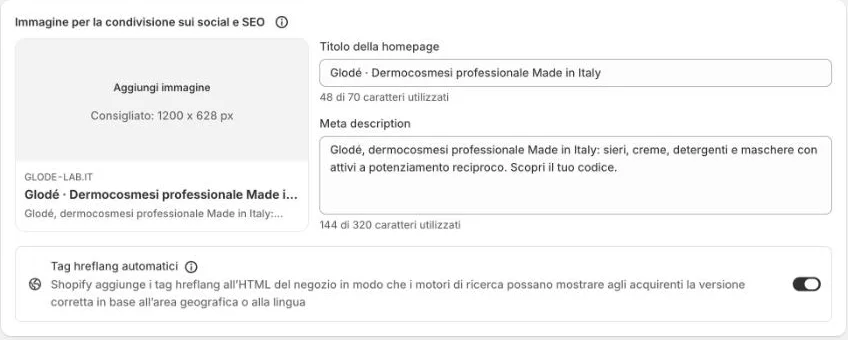
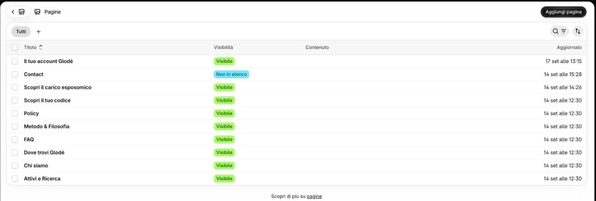
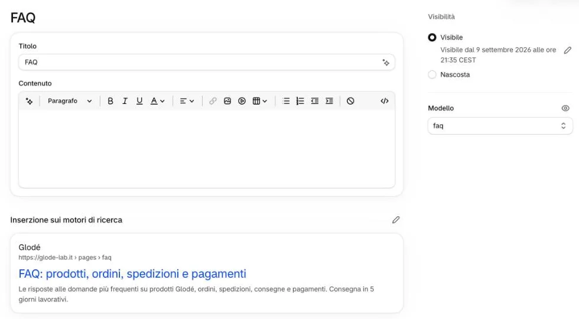
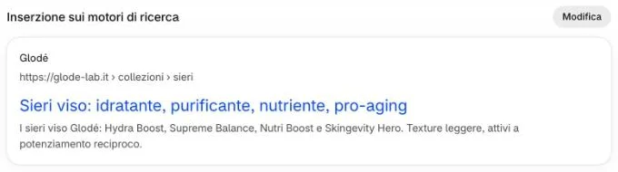

Testi per Google: home, pagine, collezioni, prodotti
- 3 minuti per pagina
- Google li aggiorna in qualche giorno
Titolo e descrizione che Google mostra nei risultati. Sul sito non si vedono.
-
Per la home, cliccate «Negozio online» → «Preferenze».
-
Cambiate «Titolo della homepage» e «Meta description», poi salvate.

Non qui 2Quanto lunghi?
Il titolo fino a 70 caratteri, la descrizione fino a 320 (il pannello li conta per voi). Meglio una descrizione di due frasi: Google spesso taglia oltre i 160 caratteri.
E l’immagine a sinistra?
È l’immagine che compare quando qualcuno condivide un link del sito (WhatsApp, Facebook). Oggi non c’è e il sito ne usa una sua: potete caricarne una di 1200 × 628 px.
Non vedo dove salvare
Il pulsante per salvare compare dopo una modifica; non l’abbiamo cliccato insieme.
«Tag hreflang automatici»?
Lasciatelo com’è.
-
Per una pagina (FAQ, Chi siamo…), cliccate «Negozio online» → «Pagine» e aprite la pagina.

3 -
Cliccate la matita accanto a «Inserzione sui motori di ricerca», cambiate titolo e descrizione e salvate.

Non qui Non qui Non qui 4Perché «Contenuto» è vuoto?
I testi delle pagine (le domande delle FAQ, Chi siamo, il Metodo…) sono scritti nel tema: quello che scrivete in «Contenuto» non compare sul sito. Per cambiarli, scriveteci.
E le parti con il riquadro rosso?
Non cambiate «Modello» (la pagina si svuoterebbe), «Visibilità» e il titolo delle pagine; non cambiate nemmeno l’indirizzo della pagina: il sito la cerca con quello.
-
Per una collezione, aprite «Prodotti» → «Collezioni», poi la collezione, e in fondo cliccate «Modifica» accanto a «Inserzione sui motori di ricerca».

5Matita o «Modifica»?
Nelle pagine e nei prodotti è una matita, nelle collezioni un pulsante «Modifica»: fanno la stessa cosa.
-
Per un prodotto, seguite il passo «Inserzione sui motori di ricerca» di Pubblicare un prodotto nuovo.
Sul sito
Sul sito questi testi non si vedono: li legge Google, che mostra il titolo in blu e la descrizione sotto. L’anteprima nel pannello è come apparirà.
Google li aggiorna da solo, di solito in qualche giorno.